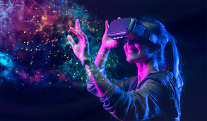

Virtual Reality
Virtual Reality.
**Virtual Reality (VR)** is a rapidly evolving technology that immerses users in a digitally generated environment, typically through the use of headsets, sensors, and other input devices. VR has moved beyond gaming and entertainment into a wide range of industries, offering innovative ways to engage, interact, and experience the digital world. Here's an overview of what VR is and how it is shaping the future:
1. **Immersive Experiences**: At its core, VR is designed to provide highly immersive experiences that simulate real or imagined environments. When users wear VR headsets, they are transported into 3D worlds that feel as though they are physically present. The experience can be further enhanced with additional equipment such as gloves, haptic feedback devices, and motion controllers that allow users to interact with their surroundings. This immersive capability makes VR ideal for applications that require deep engagement and sensory stimulation. 2. **Gaming and Entertainment**: The gaming industry is one of the primary drivers of VR technology. VR gaming allows players to enter fully interactive, 3D environments where they can engage with objects and characters in ways traditional gaming cannot replicate. Virtual reality arcades and home-based VR systems like the Oculus Quest and PlayStation VR are becoming more popular, offering users unparalleled immersion in their favorite video games. In addition to gaming, VR is transforming the entertainment industry, allowing for new forms of storytelling, such as interactive movies and live events viewed from a first-person perspective. 3. **Training and Education**: VR has proven to be a powerful tool in education and training across various sectors. In industries such as healthcare, aviation, and the military, VR simulations are used to train professionals in realistic, risk-free environments. Medical students can practice surgeries or procedures, pilots can undergo flight simulations, and soldiers can train in combat scenarios—all without the real-world risks. VR also offers new opportunities for interactive learning, allowing students to explore historical sites, conduct virtual science experiments, or take field trips without leaving the classroom. 4. **Virtual Meetings and Remote Work**: With the rise of remote work, VR is playing an increasingly important role in virtual collaboration. Platforms like Facebook Horizon and VR chatrooms allow people to interact in real-time within virtual spaces, providing a more immersive alternative to video conferencing. In virtual meetings, users can interact with avatars, share presentations, and work on projects together in a shared 3D environment. This shift could transform how teams collaborate, making remote work feel more connected and engaging. 5. **Healthcare Applications**: In healthcare, VR is used for therapy, pain management, and rehabilitation. Virtual reality exposure therapy (VRET) is increasingly used to treat phobias, anxiety disorders, and post-traumatic stress disorder (PTSD) by immersing patients in controlled, virtual scenarios that help them confront their fears or triggers in a safe space. VR is also used in physical therapy to guide patients through exercises, promoting movement and recovery in a fun, engaging way. Furthermore, VR is helping in surgical planning and visualization, allowing doctors to explore 3D models of patients' anatomy before performing procedures. 6. **Architecture and Design**: Architects and designers are increasingly using VR for virtual walkthroughs of buildings and spaces before construction begins. VR allows clients to explore architectural designs in a fully immersive environment, enabling them to make more informed decisions and provide feedback on design elements such as layout, lighting, and finishes. This technology is also transforming interior design, allowing clients to visualize furniture and décor arrangements in a virtual space before making any changes in the real world. 7. **Retail and Shopping**: Virtual reality is changing the way people shop by providing virtual stores where customers can try on clothing, shoes, or accessories without leaving their homes. Virtual try-on experiences, for instance, let users see how a pair of glasses or a new outfit would look on them through their avatars. Retailers are also exploring VR-based experiences to showcase products, allowing customers to engage with items in an interactive, 3D environment. This can enhance the online shopping experience and drive customer engagement. 8. **Social VR**: Virtual reality is reshaping the way people socialize and interact online. Social VR platforms like VRChat and AltspaceVR allow users to meet and communicate in virtual spaces, attend events, and create shared experiences. These platforms are transforming online communication by offering an experience closer to real-life interaction, where users can create personalized avatars, express emotions, and even collaborate on creative projects. As VR technology becomes more mainstream, the social aspect of virtual reality is expected to grow, offering new ways for people to connect with others worldwide. 9. **Real Estate**: In real estate, VR is revolutionizing how properties are showcased. Virtual property tours allow potential buyers to explore homes, apartments, or commercial spaces without physically visiting them. This is especially valuable for international buyers, allowing them to view properties remotely. Additionally, VR is used to visualize and plan construction projects, helping real estate developers and investors better understand how buildings will look once completed. 10. **The Metaverse and Future Applications**: The concept of the "Metaverse," a collective virtual shared space created by the convergence of physical and virtual reality, is gaining traction as a future application of VR. In the Metaverse, users can interact in 3D worlds, socialize, play games, work, and even own virtual land and assets. While still in its early stages, the Metaverse has the potential to radically change how people engage with the internet, entertainment, work, and commerce in an immersive, interconnected virtual space. **Challenges and Future Potential**: Despite its growing popularity, VR faces challenges such as the need for high-performance hardware, the potential for motion sickness, and the accessibility of technology. As the technology continues to evolve, it is expected that VR devices will become more affordable, user-friendly, and accessible to a wider audience. Advances in wireless connectivity, such as 5G, will also improve the speed and quality of VR experiences, making them more seamless and interactive. In conclusion, virtual reality is transforming a wide array of industries by offering new, immersive ways to experience, learn, work, and socialize. As VR technology continues to advance, its applications will only expand, creating opportunities for greater innovation and more engaging experiences in our digital lives.
Virtual Reality (VR) is a technology that creates a computer-generated world that you can step into and explore as if it were real. You wear a special headset with screens in front of your eyes, which makes you feel like you’re actually inside a different place. Let’s break down what VR is, how it works, and where it’s used.
1. How Virtual Reality Works
When you put on a VR headset, the screen shows images that change as you move your head. This tricks your brain into thinking you are inside the virtual world. Some VR systems also use special controllers for your hands, allowing you to interact with objects. More advanced systems may even include gloves, suits, or sensors that let you feel touch or move your entire body.
2. Where is VR Used?
VR is not just for fun—it has many real-life uses!
- Gaming: In VR games, you can fight battles, explore new worlds, or race cars like you’re really there.
- Education: VR can create realistic environments for learning, like exploring space, walking through history, or practicing science experiments.
- Healthcare: Doctors use VR to practice surgeries, and it helps treat patients with anxiety or phobias by simulating their fears.